Introduction à l’intelligence artificielle
Introduction à l’intelligence artificielle
Objectifs du cours
- Distinguer programmation classique et apprentissage automatique.
- Décrire ce que signifie « apprendre » pour une machine.
- Expliquer comment un modèle de langage produit du texte.
- Identifier des limites et enjeux importants de l’IA.
Introduction
Demandez à un assistant un poème : le texte arrive en quelques secondes, fluide et presque juste. Question simple, réponse difficile : que se passe-t-il exactement entre la question et la réponse ? Nous allons explorer le fonctionnement de ces machines afin d’en comprendre les grands principes de fonctionnement : de l’arithmétique, une quantité de données difficile à se représenter, et une opération élémentaire répétée un très grand nombre de fois.
Programmation classique
En programmation classique, une personne écrit les règles à suivre. Le programme applique ces règles à des données puis fournit un résultat.
Exemple :
SI message CONTIENT "vous avez gagné" ET message CONTIENT "cliquez ici"
ALORS
DÉBUT SI
marquer_comme_spam()
FIN SICette approche fonctionne parfaitement tant que le problème peut se décrire par des règles explicites.
Exercice 1
Écrivez la règle qui permettrait de distinguer la photo d’un chat de celle d’un chien. Une règle utilisable par une machine, qui ne reçoit rien d’autre que des couleurs de pixels, donc pas « il a des moustaches ».
Apprentissage automatique (Machine Learning)
En apprentissage automatique (machine learning), les règles ne sont plus fournies. Ce qui est fourni, ce sont des exemples accompagnés des bonnes réponses (des milliers de photos « étiquetées ») et une procédure d’entraînement qui cherche seule les réglages permettant de retrouver ces réponses.
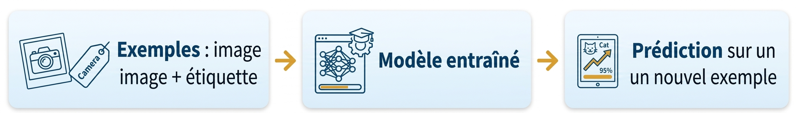
Exercice 2
Cochez l’approche la plus adaptée pour chaque tâche.
| Tâche | Programmation classique | Apprentissage automatique |
|---|---|---|
| Calculer la moyenne des notes d’une classe | ||
| Détecter si une photo contient un chat | ||
| Convertir des degrés Celsius en degrés Fahrenheit | ||
| Recommander une chanson selon les écoutes précédentes |
Deep Learning : apprendre avec plusieurs couches
Le deep learning est une famille de méthodes d’apprentissage automatique qui utilise des réseaux de neurones artificiels organisés en plusieurs couches. Chaque couche travaille sur le résultat de la précédente et monte d’un cran en abstraction. Le mot « profond » indique simplement qu’il y a plusieurs couches de calcul, pas que la machine comprend le monde comme un humain.
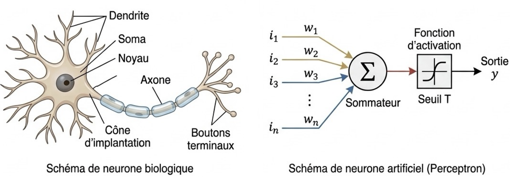
Les paramètres d’un neurone
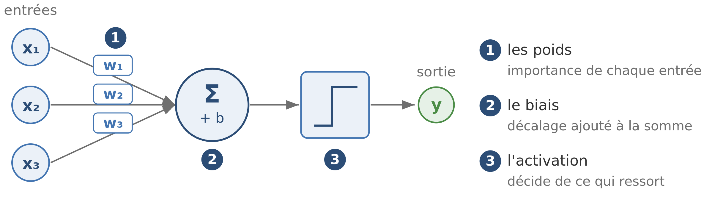
Plusieurs paramètres permettent de modifier le comportement du neurone artificiel.
Exemple trivial de fonctionnement : décider de sortir ou non un soir de semaine ?
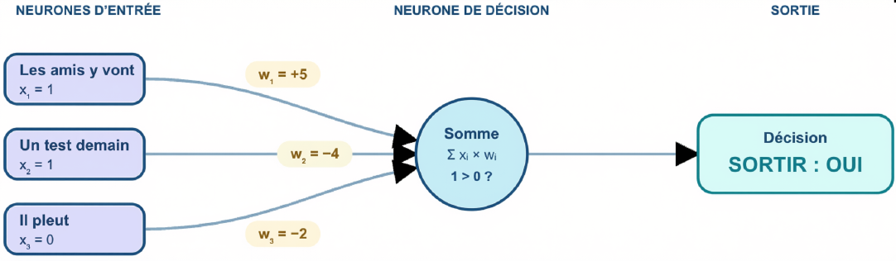
Un modèle n’est pas programmé règle par règle : il est entraîné. Ce qu’il « sait » est stocké dans des nombres, non dans des phrases. Les règles ne sont pas clairement visibles.
Entraîner la machine, c’est ajuster les poids des couches des neurones
Pendant l’entraînement, le modèle fait une prédiction, compare cette prédiction à la réponse attendue, puis modifie de nombreux paramètres internes, principalement les poids. L’objectif est de réduire l’erreur, exemple après exemple.
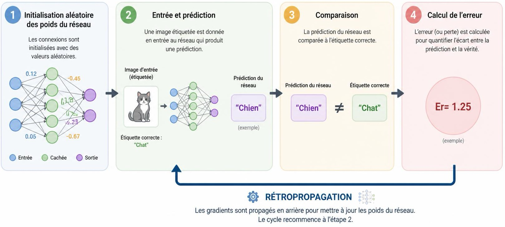
Un algorithme de minimisation d’erreur : la descente de gradient
La descente de gradient est un algorithme qui aide à choisir de petits ajustements allant dans le sens d’une erreur plus faible. Il ne garantit pas à lui seul un modèle juste ou sans biais.
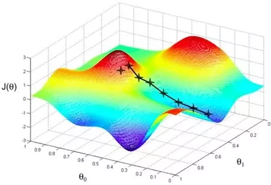
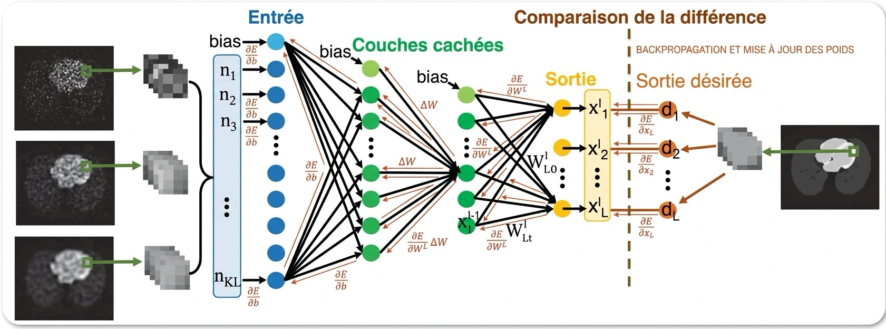
Les données comptent autant que le modèle
Le modèle ne dispose d’aucune source en dehors de ses exemples. Deux conséquences suivent directement :
- Quantité : avec trop peu d’exemples, aucune régularité fiable ne peut être dégagée.
- Qualité et diversité : pour couvrir tous les cas de figure.
Exemple de biais possible
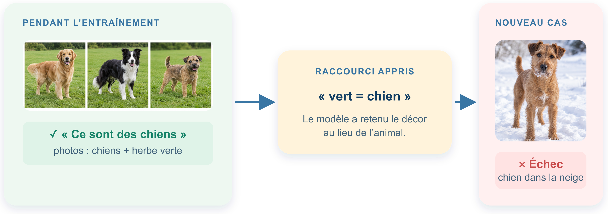
Exercice 3
En 2025, une étude a montré que des générateurs d’images représentaient presque toujours « un chirurgien » par un homme blanc. Expliquez la raison possible de ce biais ? Comment les réduire ?
Référence : Associated Press, 2025.
Les LLM : prédire la suite d’un texte
Les grands modèles de langage (Large Language Models, ou LLM) constituent une catégorie de modèles d’apprentissage profond entraînés à l’aide d’immenses quantités de données pour comprendre et générer des textes en langage naturel.
Les LLM fonctionnent comme des machines de prédiction statistique géantes qui prédisent à plusieurs reprises le mot suivant dans une séquence. Ils apprennent des schémas et génèrent un langage qui suit ces schémas.
Ils demandent un prompt en entrée, un texte découpé en tokens (des morceaux de mots) qu’ils vont chercher à compléter.
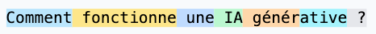
Du texte aux représentations
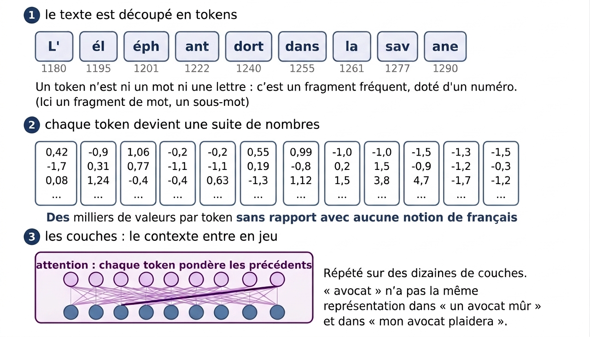
Du token à la représentation vectorielle
Les vecteurs de mots (embeddings) sont une façon pour une IA de transformer du texte en vecteurs numériques qu’elle peut comprendre et comparer. En résumé, ils aident l’IA à “comprendre” le sens plutôt que seulement les mots.
roi - homme + femme \(\approx\) reine
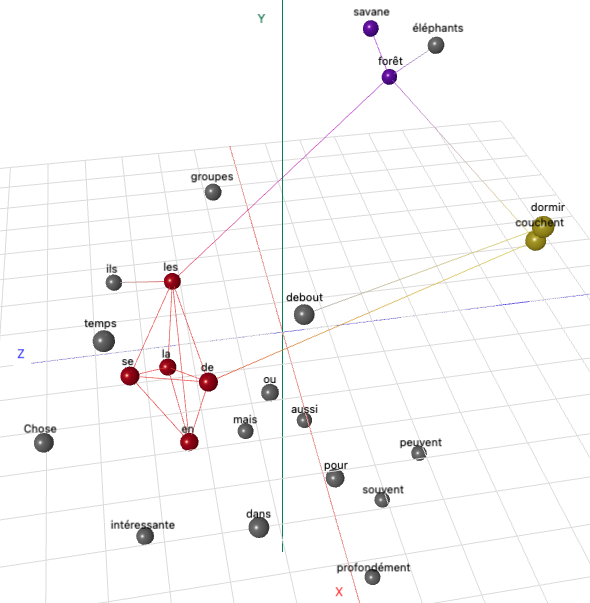
Génération du texte et température
Une fois le prompt analysé. Le modèle a pour objectif de prédire le token suivant afin de générer, de proche en proche la réponse complète.
Le modèle ne choisit pas toujours le token le plus probable. La température règle le degré de variété des choix.
- Une température basse rend généralement la réponse plus prévisible ;
- une température élevée produit des choix plus variés, mais aussi parfois moins pertinents.
De la prédiction au mot suivant
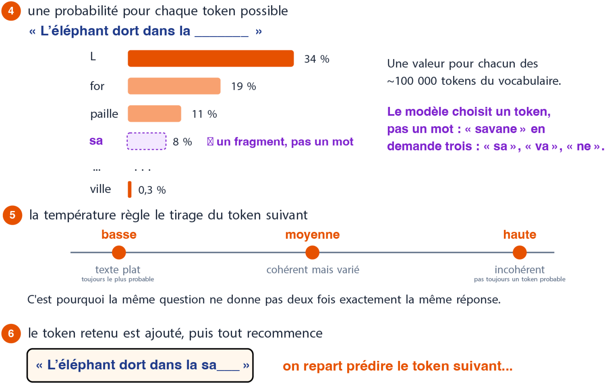
Exercice 6
Voici une liste présentant 4 limites des LLM. Pour chaque cas, vous expliquerez la raison technique qui en est la cause.
Hallucinations
Une IA générative peut produire une information fausse avec un ton convaincant.
Biais
Un modèle peut reproduire ou amplifier des biais présents dans ses données.
Impact écologique
Entraîner et utiliser de grands modèles consomme de grandes quantités d’électricité et de ressources (minerais pour concevoir les circuits électroniques notamment).
Raisonnement limité
Une réponse cohérente n’est pas une preuve de compréhension ou de vérité.
À retenir
Contrairement à un programme classique, une IA générative (provenant de l’apprentissage automatique) n’applique pas des règles écrites explicitement par un humain : elle produit une réponse à partir de ce qu’elle a appris dans ses données. Son fonctionnement interne reste donc difficile à expliquer précisément.
Il est essentiel de connaître ses limites avant de l’utiliser : elle peut notamment produire des informations fausses, reproduire des biais ou donner une impression de raisonnement sans réellement comprendre. De plus, son entraînement et son utilisation ont un impact environnemental non négligeable.
Sources
- Comment fonctionne une IA générative ? , A.D. Martin
- Illustrations, chatGPT , GPT-5.6 Terra
Comment un LLM est-il entraîné ?
L’entraînement se déroule en plusieurs étapes complémentaires.
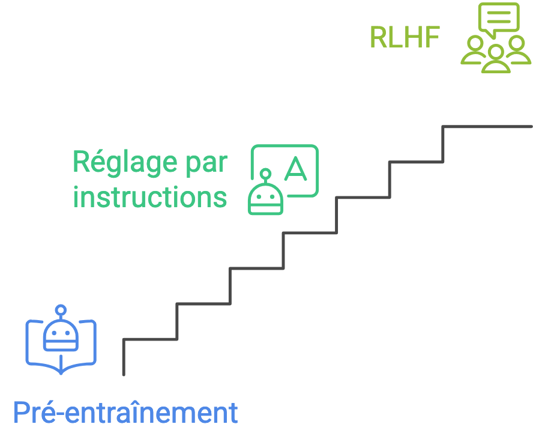